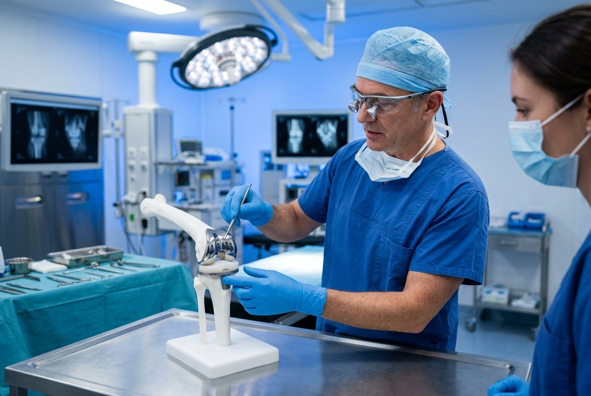

Gold StandardTotal Knee Replacement (TKR)
Resurfacing all three compartments of the knee joint. The damaged femoral and tibial surfaces are carefully shaped, and high-grade titanium/cobalt-chromium components with medical-grade polyethylene bearings are secured in place.
- Indicated for severe tricompartmental osteoarthritis
- Corrects limb alignment (varus/valgus deformity)
- Subvastus tissue planes for reduced postoperative pain